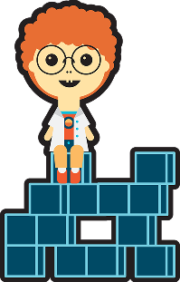
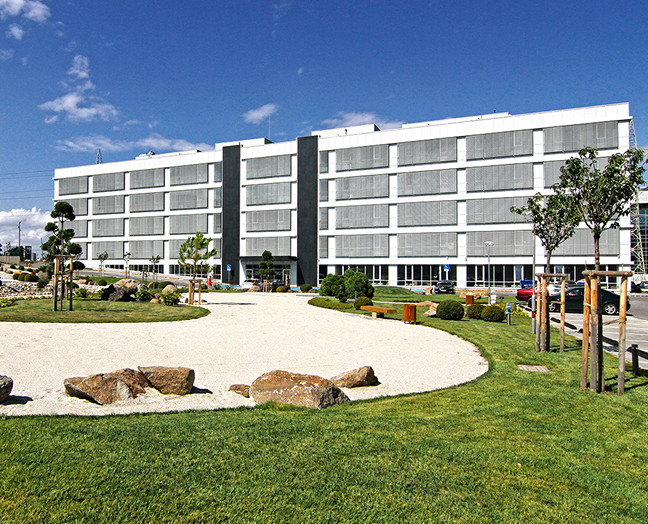

Established in 2010, Toddlers Academy is a trusted bilingual kindergarten and nursery dedicated to nurturing young minds in a vibrant international community. With native English-speaking and enthusiastic Bulgarian educators, we offer immersive bilingual education that inspires curiosity, confidence, and lifelong learning. Our classrooms are truly global, bringing together children from a vibrant blend of cultures and countries around the world, creating a dynamic, international community where every child feels valued and at home.

Why choose us?
Choosing a good kindergarten can make a meaningful difference in your child's development and set a solid foundation for future learning. For Toddlers, the differentiating qualities, and strengths for you to consider are:
Officially licensed
Officially licensed and approved by the Ministry of Education
Trusted
Trusted by parents for over 15 years with a proven track record.
Certificate
We issue the official Certificate needed to start first grade in Bulgaria.
International
International and bilingual learning environment.
Bilingual education
"Immersive bilingual education" native English-speaking teachers as well as highly motivated Bulgarian educators using modern, research-backed methods
Learning groups
Tailored learning groups for ages 1.5 to 7 years, ensuring age-appropriate development.
Personalized attention
Personalized attention in small groups (approximately 15/16 children).
Development
Focus on social-emotional and behavioral development, helping children to become more independent and confident thus fostering emotional growth.
Our Students are from all over the world
Country
Take the first step
Enrolling your child in Toddlers Academy is extremely simple!
Two Convenient Locations for Your Family. We know how important convenience is for working parents, so we offer two modern, thoughtfully designed locations, strategically situated near major business hubs:
Q Center
32 Tsarigradsko shose blv. (4th km)
A cozy, modern, and safe space tailored to chilren's needs,
following the highest global standards in care and education.
Monday to Friday | 8:00 AM - 6:30 PM

The Bells
9 Vitoshki Kambani Str. (next to Garitage Park)
Close to home or work, fresh Vitosha mountain air, safe outdoor areas and stunning views.
Monday to Friday | 8:00 AM - 6:30 PM
Hear from the parents of our students
Our families are the biggest supporters and fans!
Katherine Haun
Our family has benefited so much from Toddlers over the past 4 years and continues to do so! We started at Toddlers Academy on Tsarigradsko Shose (the original location) 4 years ago with our (then) 1 and 3-year-olds. Our 1-year-old daughter was immediately integrated into the youngest group, where she was exposed to Bulgarian all day and learned the language so quickly and without an accent! Our 3-year-old son was shy and did not want to learn the language, but through the love and caring support of all the teachers and staff, he began to show improvements and now thrives in his Bulgarian studies each day in his bilingual school. Both continued for 2-3 more years, where they developed so many skills, made life-long friendships, and were prepared for their next journey of education. We now are blessed to continue our journey with Toddlers but in the new location in Kambanite. Our son, who is three years old, loves the new building and the teachers! I can't say enough wonderful things about the teachers and staff, the extra programs offered, and the way in which they made these timid foreigners feel comfortable dropping our children off for preschool each day!
Thank you, Mrs. Desi, Mr. Niki, Miss Lisa, Miss Sophie, Miss Radi, Miss Mimi, Miss Kaitlyn, Mrs. Marina, and so many others for the impact they had and continue to have on shaping all of my children. For many years to come we will call Toddlers home! Let Toddlers Academy Kindergarten be the first step in your child's lifelong love of learning and discovery!
Stefani Yankova
As today is the last day for Lora Yankova in Toddlers Academy, I wanted to express my deepest gratitude for the care and kindness you all have provided to her. Your dedication has made a great impact on her growth and I am truly thankful for everything you have done through the year. Being far away from our relatives, you all were the first people, aside from her father and me, to take care of Lora. Special thanks to Miss Mimi, Miss Veni, Miss Marina and not least Miss Dani for all the fairytales she told her.
Knowing that she was in your hands brought me the calm I really needed. I'll be forever thankful for the smiles and joy you brought her. Lora has not only learned and grown there but has also formed her first friendships. She would come home talking about her friends or dancing and singing, while playing. From learning new English words to giving thumbs-ups, all thanks to the wonderful environment you have created. I will cherish the photos and stories from this past year. Thank you for making her first "school year" such a great experience. With heartfelt thanks and warm regards
Василена Атанасова
Toddlers Academy е едно вълшебно място! От първия ден усетихме колко много любов, грижа и внимание получават децата. Подходът е индивидуален, атмосферата - спокойна и уютна, а екипът - невероятно отдаден. Базата е модерна и добре поддържана, храната е с изключително качество. Най-важното за мен е, че дъщеря ми тръгва всяка сутрин с усмивка и нетърпение - това казва всичко! ❤️ От сърце благодаря на целия екип за обичта и професионализма! Горещо препоръчвам!
Shabir Haqshenas
We have had a pleasant experience with this kindergarten. In a relatively short time, my son has begun using both English and Bulgarian, which is especially important for us as a family.
The kindergarten is well organized, with clear routines and a safe, structured environment. The food is fresh, healthy, and prepared daily, which we really appreciate.
Children spend time both indoors and outdoors, supporting their physical and social development. The educational approach feels modern and well balanced.
As a foreign family, we are satisfied with our choice and happy with our child's progress so far.
Mihai Moraru
Dear Toddlers Academy team! I would like to express my gratitude to you, for the diligent care provided to both of my children, for getting involved in the best professional manner in offering good education and development. Words are not enough to thank all of you! Me and my kids will treasure the moments spent with you and we will keep all of you in our hearts!!! I wish you good health, may all your wishes come true and keep up the great work you are doing!
Marco Tulio
I will be always thankful with Toddlers Academy. They took my only Spanish speaking 4-year girl and support their grow into a trilingual (English Bulgarian Spanish) confident princess. Empathy, care, support, attention, arts, patience, love. All mixed in a small group when my girl was happy. I was extremely lucky to find the school. Muchas gracias.
Добрина Германова
Преподавателите са абсолютни професионалисти. Средата е отлична. Учат се на всички важни ценности, на уважение и взаимопомощ. Препоръчвам детската градина.
Йорданка Симеонова
Ако има детска градина, която да дава обич, знания и много повече от това на децата, то това е нашата детска градина. Вече 5 години сме спокойни, че направихме правилния избор. Работят отдадено и творят чудеса. Децата ни се чувстват обичани, щастливи и свободни.
Йорданка Вълчкова
Wonderful Place for Young Minds to Grow! Our son has been attending Toddlers Academy for four years, and we could not be happier with the experience. From the moment we walked in, we knew this was the right place for our child.